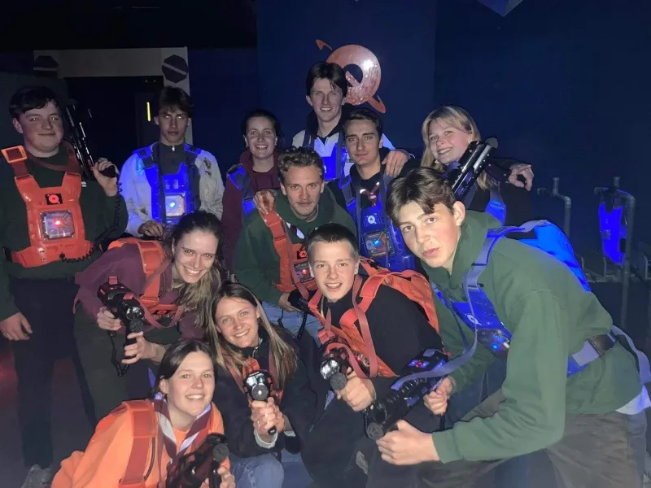
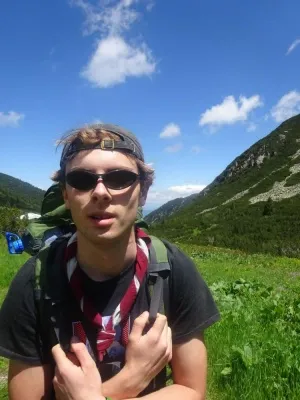
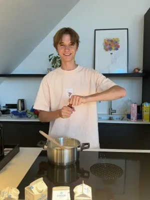

Verkenners
Zelfstandigheid en grote projecten. Verkenners plannen hun eigen kamp en expedities en nemen het heft in eigen handen.
Zelf het roer in handen nemen.
Bij de Verkenners (derde tot en met vijfde middelbaar, jongens) wordt zelfstandigheid het sleutelwoord. De jongens plannen mee hun eigen vergaderingen, organiseren projecten en nemen initiatief.
Expedities, grote pioniersconstructies, survival-weekenden en maatschappelijke projecten — de Verkenners staan met één been in de grote wereld. Hier word je niet alleen een betere scout, maar ook een betere versie van jezelf.
Onze Leiding
Het enthousiaste team dat de Verkenners begeleidt.




Klaar om het roer over te nemen?
Schrijf je zoon vandaag nog in of kom eens proberen tijdens een van onze vergaderingen.